X-RAY OF VIENNA SOCIAL HOUSING
Vienna's social housing system is a world-renowned example. This interactive map explores its location, accessibility, and distribution across districts.
BACKGROUND
By 1918, post-First World War, Vienna’s population was around two million. Inherited from the Habsburg Empire, severe housing shortages and deplorable living conditions persisted. Social housing initiatives began in 1919 with the victory of the Social Democratic Party. The period of Red Vienna (Rote Wien)(1919–1934) envisioned the non-commodified modern city as an emancipating project. This period gained momentum with Vienna's provincial status in 1922, which gave Vienna control over its own taxes. Tax reforms in 1923, by Hugo Breitner, allowed Vienna to buy land and properties to fund council housing projects. In 1923, the City Council aimed to build 25,000 flats in five years, completed by 1926. Another program in 1927 added 30,000 more. The focus was on creating healthy living conditions, coined "fresh air, light, and sunshine." The Second World War destroyed 87,000 homes and priority was given to rebuilding. Between 1945 and 1960 close to 4,200 new municipal flats per year were constructed. Municipal and non-municipal sectors (co-operatives and associations) collaborated in housing production, with the latter erecting approx. 25 percent of all new dwellings. The reconstruction of Vienna was completed already before 1960. Council housing construction slowed in the 1970s, shifting towards public-private partnerships. In 1973, the number of flats completed by these partnerships exceeded that of municipal flats. This trend was influenced by the European Union’s regulation which limited public debt and investments making impossible to invest in social housing. Significant legislative reforms were made in the 1980s and 1990s, such as the liberalization of rent regulations and the establishment of the Housing Fund Vienna (Wohnfonds Wien) for managing municipal land and urban renewal subsidies. This subsidies offered low-interest loans to landlords in exchange for limited rents post-renovation. It also fostered tenant collaboration in building renovations to alleviate cultural and social displacement. Yet, the contemporary housing scene presents new challenges. The reliance on non-profit associations for social rental housing since 2004 underscores changing dynamics in housing provision, while the liberalization of rent regulations in the private market by the national government since 2010 has reshaped the balance between social and private housing sectors, particularly in the context of heightened migration and refugee influxes.
by Camila Narbaitz Sarsur
X-RAY OF VIENNA SOCIAL HOUSING
HISTORICAL ANALYSIS
SOCIAL HOUSING BUILDINGS
Click on the highlighted red social housing buildings to reveal detailed information about each one.
HOUSING CONSTRUCTION YEAR
Move the slider and see the development of social housing in Vienna
In 2023
X
new social housing units
were constructed
*in 2004, the entire subsidised housing segment was transferred from the City of Vienna to non-profit and limited-profit housing developers.
PROXIMITY ANALYSIS
AREA COVERED BY GREEN SPACES
Big Green spaces
Medium Green Spaces
Small Green Spaces
AREA COVERED BY PUBLIC TRANSPORT
Bus Stops
U-Bahn Stops
Explore the complete PDF version, co-authored with Mihir Desai for Jornal Arquitetos here:
District Radar Graphs
These 23 radar graphs compare Vienna's districts, highlighting various key factors and offering a holistic view of their urban characteristics. Despite Vienna's well-distributed social housing, contributing to a diverse social and cultural mix, disparities still exist among districts.
 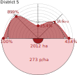
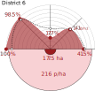
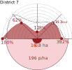
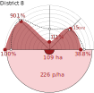
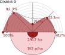
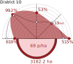
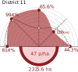
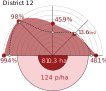
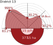
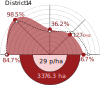
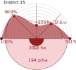
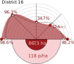
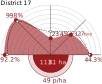
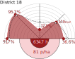
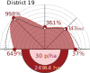
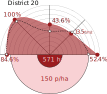
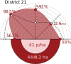
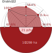
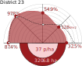
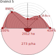
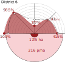
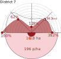
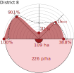
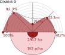
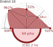
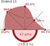
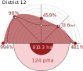
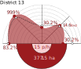
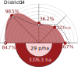
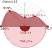
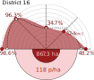
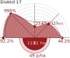
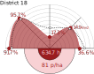
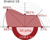
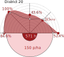
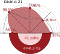
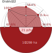
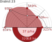